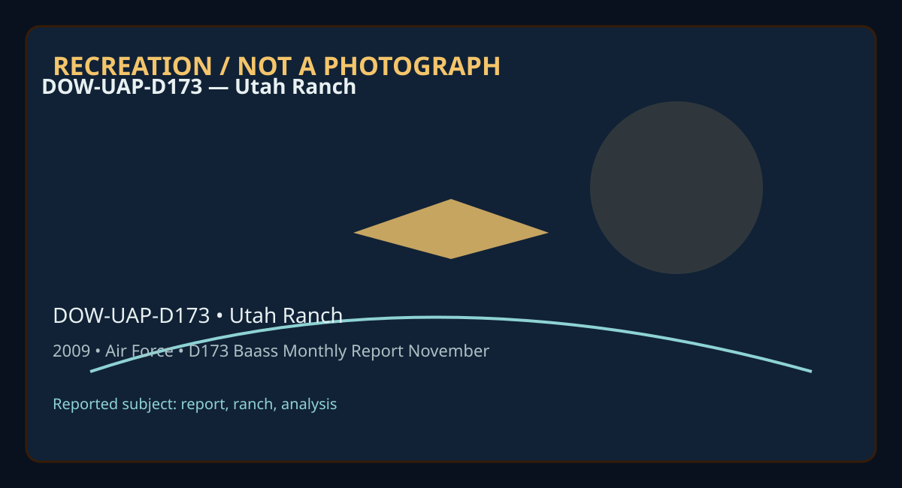

Release 07 / archival case file / DOW-UAP-D173
D173 Baass Monthly Report November 2009
This d173 baass monthly report november places a report, ranch, analysis thread in a 2009 Utah Ranch record.
ID: DOW-UAP-D173
Filename:
DOW-UAP-D173-BAASS_Monthly_Report_November_2009.pdfDate marker: 2009
Location: Utah Ranch
Agency or collection signal: Air Force
Pages read: 155

RECREATION / NOT A PHOTOGRAPH. The diagram is an interpretive editorial aid, not source imagery.
What this document says
The opening page's extracted text begins: “1/IIIEIIIIYIEJlllll,ICE ll1'IICEI1,1cEITIIIEI ® Novemtier'2009 Monthly Report”
Across the 155 pages, the recurring terms are report, ranch, analysis. Those details belong to this file, not to a generic case template. Page-level reading follows:
- Page 1: 1/IIIEIIIIYIEJlllll,ICE ll1'IICEI1,1cEITIIIEI ® Novemtier'2009 Monthly Report
- Page 2: November 2009 Report Bigelow Aerospace Advanced Space Studies (BAASS) This lnfom,at1011 Is proprietary and co11fide11tial and ca1111ot be disse111i11ated QC used wfithout prior writteA consent frem the Operating Manager or SAA"SS".
- Page 3: PREFACE This Progress report summarizes BAAS$ activities and progress for the period November 1- November 30, 2009. TABLE OF CONTENTS Topics covered in this report are the following: Summary of MU FON Investigative Activity for November 2009 .....................Page 3 Progress on Utah Ranch lnvestigations ....................................................
- Page 4: Summary of Cases That MUFON Investigated During November 2009 In February 2009, BAASS executed a Purchase order with MUFON that entitles BAASS to: (a) receive notification of significant reports on UAP sightings from anywhere in the United States within hours, (b) receive timely reports from MUFON investigators regarding investigations of these incidents (c)
- Page 5: MIJF©N ~ Mutual UFONelw0tk Case Report MUFON SIP Deployment Case# 19865 Case Type: Cat 2 i p Person 116 Investigator:.__________________, 1843 3 GPS COORDINATES : 1...._ _(-a)-( _) ________, COORDINATES ACCURACY: Location of witness vehicle on higlnway where sighting occurred. Object was seen 30-50 feet to the East at approx. 25' altitude. LOCATION: Railroad
- Page 6: On 10-13-09 a CAT 3 Star team Deployment in Modesto, CA was authorized and !'°AP Person 116 ras assigned as lead investigator. f P Person 59 MUFON (Mutual UFO Network) STAR Team Manager SIP Project Coordinator Background: Two witnesses (father and 6 yr. old daughter) in a rural area first observed and photographed two blue elevated lights in flight approxima
- Page 7: Drove to the church and waited until 20:00 when witness came out of the church. As soon as we met and made Introductions, witness offered to show me his route and stops for different events. We drove south on Tully Road and stopped midway between Kiernan Ave and Bangs Ave where witness took his 3 photos ofthe 2 blue lights with his cell phone looking southea
- Page 8: seen these blue lights although approximately 6000 feet from the railroad crossing. By the time we drove another block ("' 1200 feet ) south on McHenry Avenue to Standiford Avenue, witness's daughter had said, "It went away". (Total distance from railroad crossing "'7200 feet) I didn't see any rash on witness's daughter's chest.******* will send me a picture
- Page 9: New info: From: IAAP Person 117 Sent: Thursday, October 29, 2009 9:57 PM To:IAAP Person 124 Hf-AP Person 59 ~AAP Person 103 l!AAP Person 116 Subject: Investigator notes - reevaluating CMS 19865? October 29. 2009 AAP Person Hi I·· 103 ._,-- I read your report - I concur with Investigators assessment that daughter of witness possibly may have suffered a rash
- Page 10: http://www.modestohobby.com/ Contacting Store nearby location of sighting .... ••••••• confirmed a number of hobbyists' fly their model gliders at night or early often most evenings. ••••••• also confirmed they all use bright blue colored lights on their gliders to see their models. These models are unpowered gliders (perhaps 'slope gliders'?) ••••••• also c
- Page 11: Case Report MUFON SIP Deployment Star Team cat. 3 Case #20143 lnvestlgator:IAAP Person 109 843 2 1843 3 GPS cooRDINATES: 11 _ _ _ _ca_ > ....._ (a-)( )._ )(_-----------1 11843(a)(2). 1843(a)(3) COORDINATES ACCURACY: possible craft landing sight adjacent to witness property LOCATION: Versailles, Mo 11843(a)(2), 1843{a)(3) DATE OF EVENT: Sunday October 25, 200
- Page 12: The witness******* saw a large craft land in the woods through his bedroom window at approximately 1:30 AM the morning of Oct. 25, 2009. He and his wife watched it through the window for between 15 and 30 minutes before he decided to go outside for a better view. When ******* went outside he noticed that there were also several small objects much closer, low
- Page 13: their home. I asked******* what he did when he saw the being, and he said that he told his son to run in the house which his son did. ******* said that he stared at the being through binoculars for several minutes seeming to be "staring each other out". I asked him when, why, and how did this end. The reply was that he got tired and decided to go inside the
- Page 14: broken trees. Some were old breaks but several were new broken limbs and small uprooted trees. I also came across an uncharacteristic bare area which I measured to be 6 toot 6 inches, by 7 foot 6 inches square. There were heavy leaves covering the entire area except for this one spot which was bare except for a few leaves which had blown over it. I took a re
- Page 15: matching holes were 1 ft 4 in. X 1 ft 4 in. round at the top each being the same. took pictures as documentation. At this time we were at about 5:30PM and loosing light. We still had two more sights to get to before dark and several inches of rain moving in the next day so we moved on. ******* took me to another sight which was a large grassy area. This is w
- Page 16: low slow flight. He only watched them for a few minutes but heard them for quite some time. I asked him if this was usual activity and he said that he had only seen this one time before about 8 months ago. He has seen military maneuvers practiced over head but the last was during the day 3 months prior with dog-fight activity and flying high altitude. Whitem
- Page 17: .. •lq I 1\,-,'~ ,, /,1,.Al.f' '/ ' , . I I ..-, I ~ Drawings I'-· I
- Page 18: • f s .. Ill (- r)/o. • • f.• ~ I "1 \ ,I c,.l I .. W1 \, I... ~~i,1 l.;i ,,, ) Drawings \l\)t.rt~ d.1- t•Jr-l I .la
- Page 19: Case Report MUFON SIP Deployment CASE# CASE TYPE: CAT 2 ► 20595 - Santo ► 20598 - Stephenville ► 20610 -Hico ► 20616 - Hico ► 20618- De Leon ► 20629 - Dublin ► 20660 - Breckenridge ► More cases will be added to this list as the witnesses file them. (20806 just added- no workup yet) On November 24, 2009, 6, cases were combined into one SIP call.All calls invo
- Page 20: · · 119 TIME OF EVENT: LOCAL ( ) EXACT (X) APPROXIMATE vember 24, 2009, a CAT (2) Star t eam Deployment In TeKas was authorizedl...___ ··_. ... ·········_··· ····1AAP Person MP Person . . . .1,9 .. ........... was assigned as lead investigator. !MP Person 59 l MUFON (Mutual UFO Network) STAR Team Manager SIP Project Coordinator BACKGROUND: Many central Texas
- Page 21: Witness said all the lights were a bright white, but his wife said they were more orangy. Witness indicated that trucks on the Interstate are app 4" long to his sight, and this object was 10-12" long. He estimated that the object was approximately 200' long. There may be others calls on this generated by his friend and co-workers. This witness said when the
- Page 22: 1843{a){3) Figure 2 (20595) Orange block indicates an object at the place of the Santo sighting 20M-Stephenylle Iwas~ homeflom my in-Ins holawho liveIn ..Greenscnekna between Stlphenville and Dubin but mm near IM>llrl wllh my blyes old and 12Wll9kold In the car wllh 1111. HW11 nat long after Itumad alfof Coooty Road 242 which Ihad been,-- nor11. on ID amher0
- Page 23: Ido not bellMItchanged tu do not f8C8II when for sure tt faded alhough I know ft was within 8IOOndl of the other ~his. In all the event lD0k pa In probably a la) 2minutes. The 1hought of the UFO avhtfl9S did not oocurred 10 me•h tllid ard fourth~IPJllll8d but I was really Iha manner 1hat the llghts faded that convinced me that Ihad just witnes8ed lllnll:..,h
- Page 24: Figure 4 (20598) sighting line was judged to be 156 degrees by measurement. l 1843(a)(3) Figure 5 (20598) Line of sight Intersects with one yellow target on the timellne and is very close to an orange target at 01:45:32 (GMT 19 th ) 23
- Page 25: On aradar image out of OFW, (F19ure 6) given the distance. the orange image below the blue sighting line indicates lhat this object was between 4000 and 6000 ft above ground Hard targets In red-orange west were 1n Brown county headed east at or above 10000 ft To be that far away and that h19h eliminates most, 1f not all ground clutter, birds, bugs, etc. The
- Page 26: 20610-Hico ~6P:r.~~-~ .R~PQrt wastaken..by.Mufon_Dispatcll,1-l - 3 -6liqhts In astraight line flashing.objects were along distance away the size of this was monstrous, IT lights were connected tone object this is true. Witness was off highway 6, Between Rising Star and Comanche The lights were very bright orange, jets were chasing objects and alot smaller t
- Page 27: () 0 0 C) () I I , ' l Figure 7 (20610) Hand drawing provlclecl by witness. Witness Indicated that he thought t here were darker areas between the lights signifying an ext remely large object. I think unlighted area next to lights would look that way at night. No proof hore of an object. 26
- Page 28: Figure 8 (20610) Witnesses line of sight (begins NW of Comanche 10 miles) led his view across Lake Proctor toward area of other sightings and is itself well into the Brownwood Military Operating Area as shown. 20616- Hico ibegin in saying that this is not an unordinary event as we see these lights every once in a while outside in our yard .we live way out in
- Page 29: Of course your real excited when we are seeing these lights.. and then they are gone (maybe not really gone,just change position so we can no longer see them).. almost always afterwards we see the blinking of jets and hear the jets coming in the area. Have not reached this witness and have no reply to email.. Since we had had some news only acouple of weeks
- Page 30: . 1843(a)(2) . 20818-Qt Leon My mohrand Iwt laM!g Da Leon Texasm twwy 6n jull pmthe Leon river bridge In Ille cleari1g I happen to see ...up IDIIBY-Ml laokld I111811411111d lgtJll pa MPiU b lca,.,pQl;IJIIIll whit& lo mum b1glllll Ml emteetor And amoment laltrthn w MOlherrmto the lift ofthe flllt. The one on the~d~ and ttlelaft applald. Andfora brlaf momantth
- Page 31: r ■ - r T 20629 - Dublin r • I ,. I was drtving home from De Leon Texas toward 0ublin.... Was about 5miles out of Deleon...when 4or 5very bright circles appeared In the sky.... 3large and 2smaller....lt appeared that the smaller ones moved toward the large one like achild to its mother,very very fast then they shot upward what looked like they disappeared be
- Page 32: ... j J • , ., .., ' ,. ... Figure 11 (20629) Sighting l ights Hand drawn by witness 31
- Page 33: "t-1__11_,____., COMPOS !TE P EF. 2• 8NM KOYX • Ol'fSS ~f&, TX 1843{a)(3) [:~ ~~= flf~ MOOE, VCP: & I Jl Ltotlld: cfBZ (Ctttoorv) ... 2, (1$) t- 24 {14 ) ,._ 20 (ll) + 16 (IZ) • 12 (11) +. (10) ♦ 4 (9) 0 (I ) • ~ (7) • • (6) • 1: 15) • 16 "! • 20 3 • 24 (2 ) • 28 (1) Figure 12. (20629) Dyess long-range composite for 01:07:40 GMT-Yellow block Is In line NE,£
- Page 34: Figure 13 (20629) "Mystery Lights" article refer to the same sighting by another witness Figure 14 The (20629) sighting was in the NNE direction at app 30 degree 20660- Breckenridge This witness described the light in the following: 2009-11-18 20:05:00 was at my home, which is East of Breckenridge. I noticed what I thought was acommercial jet flying East to
- Page 35: white. As brightly lit as the object was, Istill could not make out aruselage, tail. or wings. If it were acommercial or military Jet, I should seen an outline and would have heard the sound ofJet engines, however, there was complete silence. If It had been ahelicopter, Idoubt l would have heard it(too high. too far away), and at that distance l would have b
- Page 36: l. Figure 16 (20660) Light In the Tel(as Sky depiction oflights track Figure 17 (20660) Depiction of sighting by p843(a)(2) !of Lights in the Te><as Sky OBJECT DESCRIPTION: seevanouscasefilesabove 35
- Page 37: EVIDENCE: Back in October this newspaper article came up and seems to describe some of the same type of "lights• activity that would be seen amonth later. Such repetitious activity suggest amilitary influence and control... They're baaaack (again) Unidentified lights reappear in Erath Area residents are once again reporting strange lights in the sky above Er
- Page 38: There were reader comment online about the article which give a little insight into how difficult it is for multiple witnesses to accurately describe an object when seeing the same thing. RNderCommera The r~n COO'ffll11I from the IUdlr5 In nowry cb ~ 1'8Jlfe&enl lhe \'IN of empretllbJne com •-•:ndDNWlde on Ocl 21, 200911.57 AM •They NI..,_,S.hmjlllt at ol Co
- Page 39: EVALUATION OF EVIDENCE: PHYSICAL EVIDENCE: none WITNESS'S INTERVIEW: Refer to case files above FINDINGS OF THIS REPORT: A case for the 3 helicopters and arrays: A Case for Jets and flares: A Case for TR-3B: A case for the unknown: Figure 18 (General Reference) photo- Lines of Sights from witness intersect suggesting apossible flight path of the object/light.
- Page 40: Case Report MUFON SIP Deployment Case# 20706 CAT 2 MUFON Deployment Investigators: IAAP Person 103 IAAP Person 104 1843(a)(3) GPS COORDINATES : COORDINATES ACCURACY: Exact, coordinates taken with GPS at effected area of event on Highway Location: Port Jervis, NY objected headed towards Unionville DATE OF EVENT: 11/25/09 TIME OF EVENT: 12:15 AM Local ( ) Exac
- Page 41: On November 25, 2009 , a STAR team CAT 2 Deployment was activated on Case #20706 in Port Jervis NY. STAR Team lnvestigatofAP Person 103 lwas assigned as AAP Person - lead~nvestw-at-o·r· ·- is the Chief Technical Advisor for STAR Team. 103 ' I:> lnvestigato AAP Pe,rson 104 was secondary investigator.I .. ----!was-State........-.....~:-Person Coordinator. IAAP
- Page 42: Witness Narrative: CMS Sighting Report) I left work at 12am as I work 4pm till 12am, I work in 1843(a)(2) which is approx 15 minutes from port Jervis where I live, the quickest route is to take the Minisink turnpike then to the Greenville turnpike, I was driving on the Minisink turnpike when I noticed lights in the sky, firstly I thought it was a plane then
- Page 43: looked cigar-shaped and was turning clockwise slowly (on axis) as it came towards him. He described the speed as slow like a hot air balloon. When asked to compare the size of the object to an aspirin at arm's length, the witness said that it would be about the size of a baseball. According to the witness description, there were lights (blue, white, red, whi
- Page 44: ► When he got home, he told his wife who said "well, maybe it was a plane" but the witn1ess knows that it wasn't a plane. His wife also suggested that he call the police but he didn't see what good that would do. Instead, he paced back and forth and drank a beer. He was so unnerved that he couldn't sleep for about two hours. He then goggled "how to report a
- Page 45: SUBJECT VEHICLE - Driver's side rear engine compartment magnetic field reading. (Full intensity needle pegged) 44
- Page 46: TEST VEHICLE - Driver's side rear engine compartment magnetic field reading. 45
- Page 47: SUBJECT VEHICLE - Passenger's side rear engine compartment magnetic field reading. (Full intensity needle pegged) 46
- Page 48: .. . TEST VEHICLE - Passenger's side rear engine compartment magnetic field reading I--. Note: The witness said that it seems like the car is actually driving faster now...almost as if he got a free tune up. AAP Person Note: for unknown reasons, it appears that at some point during the 103 ., ,...... -·•- .... investitfaUon; ·--- .- ikon 0700 battery failed
- Page 49: - 100 photos of the witness' car. Only 12 photos documenting the magnetic testing ~: P:~:?_~---~-!1.d.110.ne_oJ_theEMEiesting..tur:neci--0Yt.!- !then tested the exact same car model in a car dealer's lot with a digital camera ("test vehicle.") Note: While we were with the witness, he had a telephone call which did not display a number and when he answered, t
- Page 50: • Natural phenomenon was ruled out as a possibility because of the proximity to the witness, movement patterns, and contact/effects of the witness. • A radiological survey was conducted and readings in the affected area were consistent with the background readings in the unaffected control area. END REPORT 49
- Page 51: Case Report MUFON SIP Deployment Case # 20264-20123-20268 Case Type: Cat 2 Investigator: ... IM_P_P_e_ __ rs_on122_________ GPS COORDINATES: 1843(a)(3) COORDINATES ACCURACY: Within (51) feet of coordinates. 1. LOCATION: ********Tomball, Texas 2. LOCATION: •••••••*Tomball, Texas 3. LOCATION: 1-35 South Bound in Georgetown, Texas 1. DATE OF EVENT: November 01,
- Page 52: IAAP Person 59 MUFON (Mutual UFO Network) STAR Team Manager SIP Project Coordinator • Background Case #1 Nineteen year old girl comes home and hears a loud sound and looks out in her back yard and sees a disk like object floating in her back ya rd. • Background Case #2 Forty seven year old female in bed heard loud nose passed over her house, looked her out w
- Page 53: the witness statements they should be added to this report to support the witness statement. Investigator Narrative: AAP Person On November 02 2009 at 10:19 hrs this lnvestigato~ ---+recefve-a··a·------ • 122 deploy notice from SIP CoordinatorlAAP Person 59 Ito investigate a possible sighting at*******, Tomball, Harris County, Texas. At 11:20 hrs this Invest
- Page 54: • • IAAP Person 59 I At 15:35 hrs this Investigator and ______ returned to********** to interview the witnesses in this case. ( See Witness Statements) Location#1: This sighting took place at*******, Tomball, Harris County, Texas. This residence ....,...,.,..,...,..,.,,.,.___,__,..,...,..,..-,----------.--- is a 1843(a)(2), 1843(a)(3) located on 1843(a)(2),
- Page 55: Drawing done by witness Case 20264 G 54
- Page 56: 1843(a)(2) Location and appox. size of craft, photo and drawing not to scale. Object Description: 20123 On Octob r 24, 2009 r c ived report from witness she had heard a loud noise av r her hous bout 0300 hrs. Th location of this residence was given at ********Tomball, Harris County, Texas. Witness stated that she looked out the window from her bed room but s
- Page 57: the craft was hovering plants appeared to under stress from an unknown heat source. (See attached photos) Photo on the left was taken by this investigator. Photos were taken with a Nikon 35mm 6006 with a 35 to 80mm lens. The type of film used was Kodak ASA 400. Note: that the end of berries had ash appearance and to the touch of it crumbled to a fine ash lik
- Page 58: was other plant life that had signs of stress, but they had no indication of burning. The child in question that reported to be sick the witness stated that he was fine and as well as the dog. This investigator could not find any sign of burning on the ground or the house. At this time it is unknown to this Investigator what caused the burning of the Duranta
- Page 59: Witness Interview Case 20123 No witness statement taken Findings of this Report: This Investigator after interviewing the witnesses and reviewing the evidence in this case it is my opinion that this report should be listed as an unknown object. The lack of evidence i.e. photographs of the object it may never determine what the witness saw. There is supportin
- Page 60: Summary of Utah Ranch Investigations November 2009 This Utah Ranch St atus Update Is divided into 4 Sections: (a) Utah Ranch Security Officer Events (b) Report on Recent Utah Ranch Surrounding Property Investigations (c) Status of Experiments on Utah Ranch (d)l1843(a)(2) I (a)Utah Ranch Security Officer Events: Since BAASS initiated round the clock surveilla
- Page 61: anomalies/orbs. I returned to Homestead 1 to warm up and make contact with 11a43(a)(2) l ~s843(a)(2) At 2000 we conducted a tactical walking patrol to the West-side of the property and back. We stopped at Homestead 2 and Homestead 3 to conduct an LPOP. We scanned with NVGs; there were no signs of trespassers and or anomalies to report. We returned to homeste
- Page 62: 84 1843 2 ....l1__3(_a)_(2_l _______.I departed at 0445 to takej (a)( ) Ito the airport. Weather Note 33 degrees, clear, 0mph winds, 58% Humidity V/r j1843(a)(2) {17 November 09) 091117 Patrol/Observations ~1843(a)(2) 1843(a)(2) At approx 1630, we conducted a patrol along the southern tree line with L...-------1 During the patrol we checked for signs of unau
- Page 63: ~1843(a)(2) At approx 0100, we conducted a patrol to Homestead 2 wit .,_1_84_3_<a_)<_2)_____, started to bark and growl at something outside of Homestead 2. quickly -•-·· .....18-.~~(~)(2) scanned the area with NVG's but had negative findings. We took several photos inside and outside capturing no anomalies/orbs. Investigator Notes The locks on Dog Run 1 and
- Page 64: At approx 1700, we conducted a patrol along the southern tree line with 1843(a)(2) During the patrol we checked for signs of unauthorized people attempting to gain access to the property. We found no signs of trespassers or anything out of the ordinary. We stopped and checked the dog runs. The locks on dog runs 1 and 2 were in place. We also stopped by homes
- Page 65: Investigator Notes At approx 1350, we decided to go down to homestead 2 and check on the pennies. All four pennies were there but one of them had been moved. We did a thorough check of the surrounding area and didn't find any foot prints or any other signs of anyone or anything that might have moved the penny. It was sunny skies with no wind. We didn't have
- Page 66: 2_)11s43(a)(2) 1 At approx 2000, I went to the East Gate wit~1843(a)(2) LI took several photos. I did not capture or observe any activities and/ or anomalies/orbs. No security related incidents to report. ~ 1843(a)(2) At approx 2000, we posted at the Mesa with!1 843(a)(2) l We did not observe any activities and/or anomalous/orbs. At approx 2240, we walked do
- Page 67: i.)I1843(a)(2) At 1319 I took some photos of the change I left on my nightstand to send with the report. At 1SOOl1843(a)(2) Iand I went to Roosevelt to get dog food. When I returned I checked my change to see if it moved at all. I noticed that the dime was moved up and the other coins were pushed together. The quarter that was moved last night was in the sam
- Page 68: I AAP Person 44 backed up and took some pictures, checked with the thermal, and night vision goggles. Nothing showed up on anything. The dogs did not seem to notice anything. For some reason I didn't want to say anything to the other guys. After I took pictures and looked for It I didn't feel as if it was there anymore. I still felt as if we were being wat
- Page 69: Weather Note 23 degrees, cloudy skies, calm winds, 65% Humidity V/r, 1'843(a)(2) (21 November 09) 091121 Patrol/Observations ~1843(a)(2) At a rox 1615, we conducted a patrol along the southern tree line withl~~i4~(a) I 1843(a)(2) Du ring the patrol we checked for signs of unauthorized peop e attempting to gain access to the property. We found no signs of tre
- Page 70: ~1843(a)(2) [18437 At approx 0030, we conducted a patrol to Homestead 2 and West Gate with~ l1843(a)(2) IWe took several photos. We didn't capture any anomalies/orbs. We didn't observe or experience anything out of the ordinary. We also checked on the pennies at homestead 2 and they were undisturbed. Investigator Notes 1.) Just before the southern tree line
- Page 71: (B) Recent Investigation of Reports from Witnesses who Live in the Area Surrounding the Utah Ranch Property l✓IHIWIIIIIAl#I .llllf'III.Fll.l"i!U11ITll-'E'I • Skinwalker Ridge (As named by Ute Tribal members over several generations) Utah Ranch - November 16-19, 2009 Investigators IAAP Person 41 Iand IAAP Person 14 70
- Page 72: Executive Summary On November 16-19, 2009 Bigelow Aerospace Advanced Space Studies (BAASS) Field lnvestigator•~AAP Person 41 land!AAPPerson 14 I travelled to Vernal, Utah to continue the investigation into the phenomenon ~P Per.:.?..~... reported at and around the ranch property. The intent of this trip 2 was to re-contac 1s43(a)(2) interview the individuals
- Page 73: Investigative Report Prior to our arrival on 11-16-09 at 1440 hours we located the 1843(a)(2) 1843 2 .,.~ ...(-a)...<~) ---------"""l"'!"!!~""!"'l"!!'!.........;.;:is:;...b=e=l=ie;..;..;ved to be where 1843(aH2l operates th 1843(a){2) from. We decided to ,._________. ._______. attempt to contact somebody inside ~lt3<a> and see if we could identify 1843(a)(2)
- Page 74: 1843(a)(2), 1843(a)(3) property and the entire ridge or mesa Is c ear y v1s1 e. _____ is aware of all the rumors and Native American folklore surrounding the property and stated she has never witnessed anything out of the ordinary. She suggested we talk to her 3 brother-in-lawl184•3(a)C2) Iduring our next visit~;:: (a) Ilives on the same property but is out
- Page 75: 1843(a)(2l advised he is aware of the Skinwalker book, although he has not read the book. l1843(aH2l Istated the activities which occur are generally accepted as normal by the area residents. l1843(a)(2) !stated he has lived in the area his entire life. 1843(a)(2) stated he has observed unusual lights and advised he has been on the Utah Ranch property, to re
- Page 76: 1 no time in the past or ever has he believed he was outside for over three hours. 1843(a)(2) stated this sighting / experience occurred within the last five years. However he was unable to provide a more specific time frame. During our conversation with 1843(a)(2} he advised several times, the creature I lights are accepted as normal and area residents do n
- Page 77: property. We identified ourselves, and upon our identification, all parties stated they knew what / where we were talking about. Initially there was some hesitation to speak with us as statements were made by these individuals whereby the admitted to actually being on the Utah Ranch property a few nights prior. 1l 43<a) advised we were from the UFO Ranch and
- Page 78: They further described the light as a circular type orb of light with a smaller red light traveling around the host light. Initially they were uncertain as to the exact height of the light; however they stated it was less than commercial airline traffic height and was about the size of a grapefruit held at arm's length. They stated they watched the object fo
- Page 79: the initial sighting. l~~}43<a> Istated he estimated the creature was running with approximately five-foot distance between each stride and covered a great distance in a very short period of time. 1843(a) (2) stated about two or three months ago (fall 2009) he had another encounter where he witnessed an identical creature to the first encounter. On this enco
- Page 80: ;:43(a) tated the creature did not contort or move in a reactionary type movement indicating it had been hit by the projectiles, however the creature did whimper, ".. .like if you kicked a dog ... ", he described. ;t)43(a) did not advise if the creature "whimpered" after every shot, he simply stated It whimpered when they shot at and hit it. l/~3C•l Istated
- Page 81: l1843(a)(2) Istated his uncle 1843(a)<2> would also like to speak with us regarding similar incidents directly observed by him. ;:t3(a) stated his uncle works in the oil fields and is not able to meet with us during the week, as he gets off at odd hours and is really only available on the weekends. We advised meeting up with ~:t3(a) n our next trip would be
- Page 82: 11843(a)(2) This area is simply referred to as th~1843(a)(2) We identified ourselves and advised we wished to speak with him regarding some incidents in the area and to learn of the Native American culture in the area. l1s43(al<2l Istated depending on the subject we wished to discuss; he may be quite vague in his responses. l1843<aJ(2) !seemed very understan
- Page 83: spiritually tuned 1in to their surroundings and beliefs. !1843Ca)C2) !said a very important aspect is an understanding and awareness of the beliefs. I1a43(a)(2) Istated they legends are part of the Native American 2 culture and spiritual beliefs. l1843(a)( ) Istated as part of their beliefs and one particular story involved the Native Americans, specifically
- Page 84: I stated while the creatures cannot speak directly, they can communicate, and specifically mentioned the howling, which they are known for. Elaborating on the harmful nature of the creature,l1843(a)(2> Istated if you believe in them, they are a fore-shadow of disease, sickness and the like and can be targeted to specific individuals. 11s43(a)(2) I advised th
- Page 85: l1343<a)(2) I stated the mesa near the Utah Ranch property is 1343(a>(2) commonly known as 11Skinwalker Ridge". l Istated this area has was given this name generations ago and is simply an area known and accepted for this activity as this is the area in which they live and practice their beliefs. 1843(a)(2) stated the entities were given their name by the Na
- Page 86: elaborate further into this statement. In my opinion it seemed apparent l1843(a)(2) Idid not wish to discuss the area any further or provide any additional explanation at this time. l1843(a)(2) Iadvised these entities do have the ability to kill a person. l1843(a)(2) ~tated people have been killed in the southern areas of the tribal lands, near Cortez, Color
- Page 87: ~ ·· return to his residence at any time and stated he would be glad to help us with our education. 11843(a)(2) 2 1B43(a)(2) On 11/18/09 at 100 hours we spoke to 1843 (a)( ) at her 1843(a)(2) she 1843(a)E l ... owns ·- - as nen s wit t e coupe w o owne e prope y prior to 1B43(a).~?). . .being_purc.bas.e.c:Lby_ftP Person 4 IDhas had several unexplained 1843(a
- Page 88: l l~l}43(a) Istated she was also familiar with and friends with the previous owners of the Utah Ranch property, 1a43(a)(2) . l1843(a)(2l I advised she knew very well as she knew 1l 43(a) who worked 1843(a)(2) ecame close friends with them. l1843(a)(2) lstated she is aware of the rumors and stories regarding the cattle mutilations and various other stories; h
- Page 89: seen from again. 1843(a)(2) stated she believed this unknown individual resided on the property prior to the l1843(a)(2)Itaking possession of the 1843(a)~?L...-property. I · · Istated from the best of her recollection she believed this bootlegger lived on the property back in the 1930's, however she was uncertain. l:t3(a) Istated she did not know thel1843(a)
- Page 90: ~ l~ft3(a) Iagain stated she is familiar with all the stories of the Utah Ranch property and surrounding area; involving the cattle mutilations and sightings, however she advised one such personal experience she had occurred 2-3 years ago about 2007 or 2008. ~f> 43(a) stated she believed it was in the early spring time. 1843(a)(2) tated she was coming home w
- Page 91: 1843{a) (2) stated she had also witnessed what she originally thought was simply a star. 1243 a) stated this sighting was within the past couple of months. 1843(a) stated she was outside with her dog, when an unusually bright light caught her eye in the sky. I - !stated as sbe focused on th~ 1a~_3(a)(2) light, she observed and noticed the object to be zigzag
- Page 92: ~ We aske~~~}43<a) Iif there were any other incidences or memories she could recall. ;ii43<a stated when she was youn er; she and her brother saw a ufo an were subsequently interviewed b 12; Person 1843(a)(2) believed this interview took place in 1968 - 1969. ;t43<a) stated this sighting occurred about three miles east of Randlett and near the area of Pelica
- Page 93: ~ -------- 1843(a)(2) stated when the object disappeared, it traveled at such a great speed, neither she nor her brother was able to visually track the object. 1843(a)(2) tated she did remember a distinct change in the noise of the craft when it disappeared. 11a43(a)(2) ftated it was not like a commercial jet when you can hear the engine noise trail off, thi
- Page 94: 1843(a)(2) unidentified creature. ..____stated the creature stood approximately seven (7) feet tall and he hit the creature in the lower chest area. 1843(a)(2) stated the creature did not say anything, and physically pushed him away. l1843<aH2> Istated the creature did not appear to be aggressive or want to do him harm, other than forcefully / physically pus
- Page 95: knowledge must be gathered while maintaining the highest level of respect for the tribal members and Native American culture. l1943(al(2l Iand his family will be a valuable asset into gaining not only additional information regarding our investi ation but due to their family connection and being directly related t 1843(a)(2) who has been an area resident for
- Page 96: Photographs November 16-19. 2009 Description: 1. Photo #008 - Dirt mound where creature was seen standing on hind legs when shot byj1843(a)(2) I 2. Photo #009 - Ravine and creek where creature ran after being shot. 3. Photo # 011 - Ridge where creature was seen running in an easterly direction. 4. Photo # 012 - Trees on top of ridge where creature ran throug
- Page 97: Photo #008 - Dirt mound where creature was seen standing on hind legs when shot by ... 11s_4_3(_a)_(2_) _______. 96
- Page 98: Photo #009 - Ravine and creek where creature ran after being shot. 97
- Page 99: Photo# 011 - Ridge where creature was seen running in an easterly direction. 98
- Page 100: Photo# 012 - Trees on top of ridge where creature ran through. 99
- Page 101: 1843 2 Photo# 014 - View from ravine back towards rear o~.__ _ _(a_)(_)______. 100
- Page 102: Photo# 015 _ p843(a)(2) I 1843(a)(2) 101
- Page 103: Photo #016 - Trash and horse bones in ravine taken from dirt mound where creature was standing while shot. 102
- Page 104: 1843 2 Photo #017 - View fro (a)( > toward ravine and creek!1843(a)(2) 103
- Page 105: Photo# 018- on Independence Rd. facing west towards "UFO hill." 104
- Page 106: Photo #019-Where Independence Rd. ends and turns into dirt at base of "UFO hill." 105
- Page 107: Photo #020 - Base of "UFO hill" looking down Independence Rd. at intersection with 1500 East. (c)Status of Experiments on Utah Ranch Plant Germination Experiment for Utah Ranch There are multiple reports in the peer reviewed literature that pertain to effects of magnetic fields and electromagnetic radiation of different frequencies on germination of seeds (m
- Page 108: seed growth, viability and/or germination. Below is one example of an experimental design whereby seed storage, germination and, when controlled temperature/humidity chambers are available, growth, is compared between Las Vegas and Utah. Experimental Setup: Utah Ranch BAASS A. Expose seeds dry A. Expose seeds dry 1. Petri dish with 10 seeds 1. Petri diish wi
- Page 109: B. Expose seeds during germination Utah Ranch BAASS 1. Petri dish with 10 seeds 1. Petri dish with 10 seeds i. Four different seed types (see below) i. Four different seed types (see below) ii. Two dishes per seed type per location ii. Two dishes per seed type iii. Soak seeds and place on moistened paper iii. Soak seeds and place on moistened paper iv. Place
- Page 110: Seed Germination Protocol 1. Soak seeds in water for 30 minutes. This allows seeds to absorb water allowing for faster germination. 2. Place three sheets of paper in petri dishes and add enough water to moisten paper. 3. Place 10 seeds of each seed type onto paper to maintain adequate spacing. See Figure 2 for pattern of seed placement. Set up two petri dish
- Page 111: Figure 1. Sample setup of petri dishes plus seeds (Wet and dry exposures). Setup two complete sets - one in area of high activity and one in low activity area. A. Dry seed exposure 88888888 Sweet corn Lima Beans Sugar Snap Peas Garden Bean B. Wet Seed Exposure 88888888 Sweet Corn Lima Beans Sugar Snap Peas Garden Bean Figure 2. Pattern of seed placement in p
- Page 112: Figure 3. Pictures demonstrating seed germination of seed types used. Sugar Pea seedlings corn seedlings Green Bean seedlings Lima Bean seedling 111
- Page 113: Record below the number of seeds that germinate daily: Day Sweet Corn Lima bean Sugar Snap Pea Garden Bean Location 1 Location 2 Location 1 Location 2 Location 1 Location 2 Location 1 Location 2 1-AM 1-PM 2-AM 2-PM 3-AM 3-PM 4-AM 4-PM 5-AM 5-PM 6-AM 6-PM 7-AM 7-PM 8-AM 8-PM 9-AM 9-PM 10-AM 10-PM 11-AM 11-PM 12-AM 12-PM 13-AM 13-PM 14-AM 14-PM 112
- Page 114: Tamper-Proof Games Located on the Ranch There are numerous anecdotal reports from the security officers (see previous section-reports from security officers) of the unexplained movement, translocation, inversion or disturbance of penny coins that have been left at various locations inside and outside t he double wide trailer on the Utah ranch. However, all o
- Page 115: All of the "brain teaser'' games require a modicum of effort, analysis and intelligence to assemble and cannot be assembled (or disassembled) randomly. The locked briefcases containing the games are then positioned in a "hotspot" on the ranch for a month. The briefcase is then returned to Las Vegas and opened and the contents examined for any differences. 11
- Page 116: Puzzles Requiring Intelligence to Complete The following experiment assumes a low level of mathematical know-how on the part of any phenomenon on the Utah Ranch: briefly, a series of dark colored tiles are arranged (glued) to the graph paper in a locked, tamper proof light box as a Fibonacci series (01,1,2,3,S,8,13,21,34,55 .....) and the challenge for any i
- Page 117: I BAASS began monitoring the websitel1843(a)(2) Iin late summer 2009 since it appeared to contain several items of interest including a discussion forum that appeared to revea l many "facts" about BAASSactivities and some personnel. In November BAASS investigatorp Person 34 Icompiled t he following report. Date: November 12, 2009 To··IAAP Person 7 I ....____
- Page 118: The three points of interest and concern me are the Blog, Whose Involved and the Forum. o Blog • On November 3, 2009. He posted a blog "Is Ball Lightning to Blame?" l1843(a)(2) ~isted the blog "There have been a three star general and two other important ranking officals to the property in the past year and the story goes they saw something that frightened t
- Page 119: In the NIDS section he lists the parties involved and the address of the BAASS building on Polaris. In the Mufon section he details the connection between MutonG -···- .. r~-~erson ~PP:~~?~ -- +------ pnd BAAS$. In the EX Military Police Security Force Team section he posted a picture of the director of security at the ranchfPPerson 49 IWe were able to deter
- Page 120: property whom are supervised by a ex navy seal (non/active} working with a attack K9. The seal is likely working under contractor status now (speculation) however he has professed to others that he has "orders to shoot to kill". Odd for a property managed by lowly NIDS scientists, and now supposedly in "inactive" status. The other sections of the website are
- Page 121: Detailed Subject information 1843(a)(2) 1843(a)(2) 120
- Page 122: Subject Information: 1843(a){2) Name Address Home Cell 84 2 Wife/Girlfriend ._l1_ _3(-a)_<_) ______, Bio: 8 years traveling around the United States investigating the paranormal. Bachelors of Science degree from New Mexico University. Pilot, web designer, business owner, and married father of 2. Countless close encounters with paranormal events both around S
- Page 123: Personal Information: l1843 H2 ...._ _ <_a__>_ _____.I has a wide variety of interests. He was a body builder who injured his back and has been taking vicodin for over four years. He has an obsession for motorcycles and paranormal activities. He has reported credit and financial problems. Employment: 1843(a)(2) Email addresses: 1843(a)(2) Websites: 1843(a)(2
- Page 124: 1843(a)(2) Youtube Postings: 1943(a)(2) has posted thirty two video clips to You Tube in the past three years. Sixteen of those are related to the Ranch. His profile information is listed below. 1843(a)(2) Channel Views: 1,816 , 843( • )(2) 123 1
- Page 125: Last Sign In: 1 hour ago Subscribers: 19 1843(a)(2) Country: United States Conclusion: I believ~ 1843(a)(2) Ito not only be a threat to our wo,rk, but to the safety of the security and the staff at the Ranc~~: )1~} jhas been detected by the security of the ranch on at least two occasions and had the audacity to post one of the occasions on You Tube and his w
- Page 126: IMPORTANT NOTE: SincelAAP Person 34 lsubmitted his report, BAASS investigators subsequently determined that the majority of the material thatl1843(a)(2) I l1843(a)(2) ~as posted has been from Internet sources and that rather than being a threatJgi43(a) lis merely a skilled researcher with a lot of contacts in the Roosevelt and Duchesne areas of Utah. In shor
- Page 127: _ Blue Orb Case: Preliminary Research Status Report November 17, 2009 IAAP Person 18 I IAAP Person 29 Executive Summary On the evening of Aurst 16, 2007,l1843(a)(2) land her 1S4J(aJ(2J 11s43(a)(2l were driving a rental car through Northern California near Davis. The time was approximately between 8:30 PM - 10:00 PM. Three blue orbs were seen erratically swir
- Page 128: pounds despite increasing her fitness routine and decreasing her caloric intake. A list of worrisome symptoms began to emerge including a skin rash, loss of hair, blurred vision, decrease of hearing, osteoarthritis, and an overall general feeling of being unwell. Of particular interest is that all symptoms seem to be in the path of the blue orb (Refer to Fig
- Page 129: Event Chronology Table 1. Sequence of Events 1843(a)(2) 1843(a).(2). MP Person 8 1843(a)(2) Date/Time Event 8/16/2007, 8:30-10:00 PM Blue Orb Incident, immediately she felt nauseas and unwell 8/16/2007, Bedtime had the dream of the face and hand trying t o fix her 8/17/2007 8/20/2007 1843(a)(2) I . ·- ... 8/20/2007 -10/23/2009 Deteriorating health-viewLJP
- Page 130: Location Overview and Weather Conditions • Northern California, north of Davis, general location between Woodland and Knight's Landing on County Road 102. Figure 1. Map indicating location of incident. The location of the incident is within the oval circle on the map. Knights, Landing Zamora @ () nd 129
- Page 131: Table 2. Weather conditions at the time of the incident. Time CPDTI Temp (F) Dew Point Humidity Barometric Pressure Visibility Wind Dir Wind Soeed Precip Conditions 7:53 81.0 "F 48.9 "F 33% 29.75 in 10.0 miles South 11.5 mph None Clear 8:53 75.9 °F 50.0 "F 40% 29.76 in 10.0 miles SSW 11.5 mph None Clear 9:53 71.1 °F 51.1 °F 49% 29.77 in 10.0 miles South 10.4
- Page 132: ~~ . I1843(a)(2) I h d AAP Person 8 k h h F II o owing ,________._ s e an ept in contact t roug AAP Person 1843(a_)~~L...e.mail.___SiAceEJhad experienced 1843(a)(2) there was difficulty at a / ,· first in setting up a telephone interview. Finally, on June 3, 20090anctCJ.1a4~{~)(2) 1843(a)(2) IMP p 81 EJ - ··· · .erso.1:i. - spoke- on--the---te-teph-one~ - wa
- Page 133: •••• Interview Summa·ries AAP Person 7 1843 I I Phone Interview --------- an (a)(2) 1843(a)(2) At 11:00 AM on 08/26/2009, IAAP Person 7 Icalled D in order to introduce himself and arrange a date for a face to face meeting. Below is a summary of the telephone conversation. 1843(a)(2) 1843(a)(2) · · Owas driving in a car with her son whe~AAP Person 7 Icalled.
- Page 134: move slowly through her upper body, and exit through her right side. As 1843(a_)(2_)___this---was---happen+ng;-EJ thought something bizarre was occurring, everything seemed to become blurred and hazy. She recalls being fixated 1843{a)(2) 1843(a.;...;._;.)___ - t,me tosee--abright. blue )(2 on the expression-on E)taceGooked-up-in ball moving away from her car
- Page 135: ended, I1843(a)(2) I 1843(a)(2) I 1_ _ 1843(a)(2) • In the days following the conferenceDegan--toieel progress1vefy unweTi ••• and quickly began to gain weight. 1843(a)(2) • Das always worked out once per day and been a careful eater. In spite of this healthy regimen, she began to gain weight rapidly while feeling increasingly unwell. In response to the weig
- Page 136: ------------ . JAAP Person 7 b d 1843(a) Phone Interv,ew I rn c2> 1843(a)(2) At 3 :00PM on 08/28/20091AAP Person 7 ~nd □spoke • o-r1-·t1,e·· t~·le~h~n~:· ···-~he following are the details that emerged from the conversation: 843 •... _ (a)(zi ____________.l was her mother in l1_ _ - _ travelling with Northern California. They were on their way to stay .at her
- Page 137: 1843(a)(2) EJ --· • •••• was certain that the car windows had been closed and the car radio had 1843(a)(2) not been playing. ··•-• .................... • lnimediatery'following the event[Jwas motivated to discuss the incident since she was frightened. Her Mother did not want to talk about it and wanted to drive out of the area as fast as possible.Gat1ed..her
- Page 138: just crossed over 1-5. The incident occurred just after crossing over 1-5, around a street called Pollard. • Momentarily after the incident occurred0 glanced attbe clock_anctsaw1a43(a)(2) that it read 10:45 PM. 1843(a)(2) discussed how time was distorted and how the trip seemed to be taking longer than expected. Finally they arrived at l1843(a)(2> Iat approx
- Page 139: 1843(a)(2) 1843(a)(2) AAP Person 81 Idescribed thel1 843(a)(Z) • 1843(a)(2) I ....,· l AAP Person 81 / ~,,·-- • The conversation then turned tol..._ ....lweight gain. She describe~... h~!. .1843(a)(2) healthy diet, exercise plan, vitamin intake and emphasized the fact that she continued to gain weight~AAP Person 81 Iquestioned[:)onthe area.... 1~43(a)(2) of
- Page 140: • • 1843(a){2) AAP Person 81 Ialso speculated that her 11343(a)(2) 1843{a)(2) 1843(a)(2) • O stated that her patients and family have been commenting on how premature aging has set in following the incident. Note, she has never smoked, done drugs or drank alcohol. • The conversation wrapped up with l_AA_P..--Pe-rs_o_n_ 81______,laskin0what18~3{a){2) 1843(a)(
- Page 141: 1843(a)(2) Path of the Blue Orb 1843(a)(2) ••• •., Refer to Figure 1 below for a depiction of the path of the blue orb through 1843(a)(2) -~ bodv- ···-· . EJstated that the blue orb entered her left shoulder, navigated ~ ~ 1843(a)(2) through her tissue and then exited her right upper arm area. Asl__Jphysical -· •• symptoms, in the preceding section, are comp
- Page 142: -- hypot h1>l.snius thyro id end parathyroid gland~ < adrenal glands poncret1t1c 1s1cts -~ a d lpo:.o (fatt y) pit uitary g land breasts ptncal 01and ~~:::.r-++- -r- L-.+--t' tls:.u o Figure 19. Path of the Blue Orh 141
- Page 143: Documented Medical Records Summary 1843{a)(2) 142
- Page 144: 1843(a)(2)
- Page 145: 1843(a)(2)
- Page 146: 1843(a)(2)
- Page 147: cl,I\ lrll' ~ !oh llllllll h11111r1us .:::.:;::~ ~ - rib " ·ru,hr,1 pc.,h" ,...,..____ _ 'lc¥1UO t .trp.1h 111! 1l<,lfJ1'1h pl1.:1!.1ost, lumw tNIIS-lll c- ....i..tbrk --! u u -y.,,..__,,,, duulU< £>J...-..Jr.i-/ -•• of dvf• mtltf u tlbl,t-----+-'-H hhul,1------1,11 1111'1,II..r,,th ~ Figure 20. Skeletal System Unidentified lntlammatory Problem and Abnormal
- Page 148: 1843(a)(2)
- Page 149: 1843(a)(2)
- Page 150: 1843(a)(2)
- Page 151: 1843(a)(2)
- Page 152: 1843(a)(2)
- Page 153: 1843(a)(2)
- Page 154: 1843(a)(2)
- Page 155: Conclusion Many of the important BAASS projects, including Northern Tier, entry into classified archives, Project Oral History, as well as contacting key people in the military and private sector are on hold because BAASScurrently does not have the Need to Know for this information. BAAS$ in collaboration with the sponsor has recently taken tentative steps t
Historical context and disclosure schema
Read in context, this record belongs to the 2009 information environment: Air Force paperwork, a Utah Ranch setting, and the reporting conventions visible in the source. Its broader disclosure value is procedural as well as anecdotal: it shows how an observation, material question, investigation, or analytical program was routed, described, and preserved. That makes it comparable to other Release 07 records without collapsing unlike evidence into one event.
Evidence limits
The source establishes that this document exists and records what its authors or quoted witnesses wrote. It does not, by itself, prove the identity, performance, origin, or physical reality of the reported subject. Extraction preserves wording but cannot restore missing attachments, authenticate provenance, or independently validate testimony. Interpretations beyond the page-specific record remain hypotheses.
Source: supplied PDF in research/tranche-07. This article is a research aid, not a claim that the reported object was non-human.